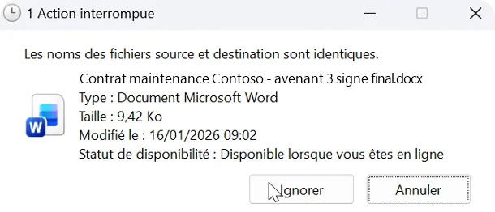

Comprendre le problème
Windows limite la longueur du « chemin » d'un fichier, c'est-à-dire son nom plus tous les dossiers qui le contiennent. Quand cette longueur devient trop grande, deux seuils posent problème :
| Limite | Conséquence | En savoir plus |
|---|---|---|
| > 255 caractères | ⚠️ Avertissement : le fichier est synchronisé, mais Windows ne peut pas l'ouvrir depuis l'Explorateur. Il reste accessible en ligne (OneDrive ou Teams). | Comprendre l'erreur |
| > 400 caractères | 🔴 Critique : OneDrive ne peut pas synchroniser le fichier. | Comprendre l'erreur |
Chemin > 400 caractères : OneDrive affiche une erreur de synchronisation et indique le nombre de caractères en trop. Le fichier ne peut pas être synchronisé et OneDrive reste bloqué sur cette erreur tant que la longueur du chemin n'a pas été corrigée.

Chemin > 255 caractères : le fichier est synchronisé, mais impossible à ouvrir directement depuis le dossier OneDrive. Il reste accessible en ligne ou via Teams. OneDrive n'indique pas la longueur du chemin, ce qui rend le diagnostic difficile sans outil dédié.

Windows n'affiche pas toujours la longueur des chemins.
Sans outil, il faut copier chaque chemin dans un éditeur de texte pour en compter les caractères : une tâche irréaliste sur des milliers de fichiers.
OneDrive Path Checker réalise ce diagnostic en quelques secondes, avant que les erreurs n'apparaissent.
Utiliser l'outil
L'outil analyse un dossier OneDrive synchronisé sur votre poste. Il mesure la longueur du chemin Windows complet de chaque fichier, depuis la racine du disque. Par exemple :
C:\Users\julie\OneDrive - Mon Entreprise\Projets\2024\Document important.docxAu-delà de 255 caractères, le fichier est signalé en avertissement ; au-delà de 400, il est signalé comme critique. Un chemin d'exactement 255 caractères est accepté.
L'outil est conçu pour analyser des dossiers de taille professionnelle :
| Volume | Performance |
|---|---|
| Jusqu'à 50 000 fichiers | Rapide et fluide |
| 50 000 à 100 000 fichiers | Fonctionnel, quelques secondes d'attente |
| Au-delà de 100 000 fichiers | Possible ralentissement selon la machine |
Pour chaque fichier, un menu « ⋯ » permet de le renommer, d'ouvrir son dossier ou de le supprimer (avec confirmation).
La fenêtre de renommage s'ouvre sur l'élément le plus long du chemin et montre en direct la nouvelle longueur par rapport aux limites. Trois boutons nettoient rapidement les espaces, la ponctuation et les tirets.
Les fichiers que vous corrigez restent dans la liste, en vert, et sont comptés dans la catégorie « Corrigés » : vous suivez votre avancement en direct.
Deux formats sont disponibles : CSV (lisible dans Excel) et PDF (rapport prêt à imprimer ou à partager, avec le score de conformité). Les deux reprennent les colonnes de l'application :
- Longueur totale
- Excédent par rapport à 255 caractères
- Excédent par rapport à 400 caractères
- Niveaux de dossiers
- Nom et chemin du fichier
Les lignes sont triées du chemin le plus long au plus court. Seuls les fichiers encore à corriger y figurent.
Pour rester transparent, voici ce qu'il faut savoir :
- Les fichiers de plus de 400 caractères ne sont pas synchronisés par OneDrive : ils peuvent être absents de votre poste, donc de l'analyse.
- Le suivi des fichiers corrigés dure le temps de la session : un nouveau scan le remet à zéro.
- Renommer un dossier modifie aussi le chemin des fichiers qu'il contient : lancez un nouveau scan pour mettre la liste à jour.
Sécurité et confidentialité
Oui. L'outil fonctionne entièrement en local sur votre poste. Aucun contenu de fichier n'est lu et aucune donnée (noms de fichiers, chemins, résultats) n'est transmise à un serveur externe. L'analyse ne nécessite pas de connexion Internet.
Non. Aucun droit d'administrateur n'est requis. L'application s'exécute dans le contexte de l'utilisateur connecté et accède aux fichiers avec ses droits habituels.
Le scan est en lecture seule. L'outil ne modifie un fichier que si vous le demandez : renommage validé par vous, ou suppression d'un fichier avec confirmation. Il ne supprime jamais de dossier.
À propos du développeur